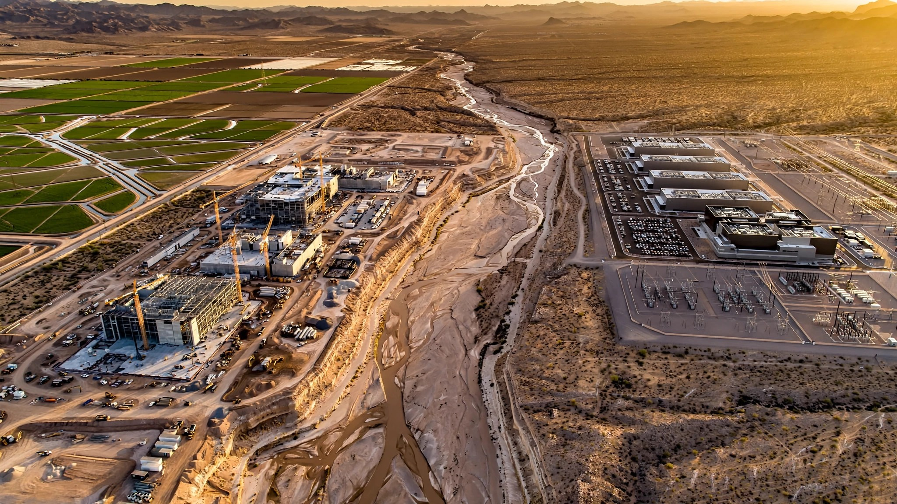

Water Rights Intelligence and Transaction Platform for Industrial Megabuyers
TSMC's three Arizona fabs will consume 16.4 million gallons of water per day. A single hyperscale data center can drink 5 million. Green hydrogen electrolyzers need 2.4 gallons for every pound of H₂. These buyers are entering a market where water rights change hands through phone calls between brokers who've known each other for thirty years, where pricing data is locked behind $50,000/year subscriptions, and where a routine transfer in Colorado takes 12 to 24 months to clear water court. The buyers have billions. The market has filing cabinets.

The Problem
Water rights in the western United States are property rights, as real and transferable as a deed to land. They can be bought, sold, leased, and transferred, subject to state-specific legal frameworks that range from the relatively streamlined (Arizona's groundwater permitting) to the extraordinarily complex (Colorado's specialized water courts, where a routine change-of-use proceeding involves hydrologic modeling, engineering testimony, and multi-party opposition from downstream users who fear injury to their own rights). The prior appropriation doctrine that governs most western water — "first in time, first in right" — means that older rights are worth more, that seniority determines who gets cut during drought, and that a water right's value depends on a tangle of legal, hydrological, and historical factors that no spreadsheet captures easily.
Despite this complexity, the market for trading these rights operates with less transparency than a county fair livestock auction. No MLS, no Zillow, no standardized pricing index that a buyer can reference to determine whether $91,000 per acre-foot in Northern Colorado is expensive (it is, by western standards) or whether $6,000 per acre-foot in Bozeman, Montana, is a bargain (it is). WestWater Research, the closest thing to a data provider in this space, reported that Colorado is the second-highest state by total value of water traded in the last decade and sixth by volume, implying prices per unit that dwarf every other western market. But accessing that data requires an enterprise relationship. A developer breaking ground on a $20 billion semiconductor fab in Phoenix cannot type "water rights for sale near TSMC" into a search engine and get useful results.
The brokers who facilitate these trades work from personal networks built over decades. A LoopNet profile of Colorado water brokers described the process this way: one broker primarily represents buyers (municipalities, developers), the other primarily represents sellers (farmers). When they match a buyer to a seller, the deal begins. Finding that match happens through phone calls to water engineers, lawyers, municipal representatives, and mutual ditch companies. "That's probably the first place I go," one broker said. "By phone or email, I say, 'I'm looking for such and such water.'" No database, no algorithm, just a Rolodex and a phone line and the accumulated trust of a thousand handshake deals in a basin where everyone knows everyone and outsiders don't get callbacks.
This worked when buyers were municipalities adding 5,000 residential connections per year and had a decade to plan. It breaks completely when the buyer is Intel, TSMC, Microsoft, or a green hydrogen startup that needs to secure 10 million gallons per day within 18 months to meet a project financing deadline tied to billions of dollars in construction loans that start accruing interest whether the water shows up or not.
The Numbers
The scale of new industrial water demand entering the western U.S. market has no precedent in the 122-year history of the Bureau of Reclamation, and it is arriving across multiple sectors simultaneously in a way that makes the municipal growth of the 1990s and 2000s look like a rounding error. Consider just the semiconductor sector. TSMC's three fabs in Phoenix will require a combined 16.4 million gallons per day, with the city needing to deliver 4.2 million gallons daily after the company's on-site recycling. Each chip requires nearly eight gallons of water to manufacture. A single fab consumes 8.9 million gallons per day according to an American Bar Association analysis, roughly 3% of Phoenix's entire water production. And TSMC is one company in one city. Samsung's Taylor, Texas, fab complex, Intel's Ohio facilities, and Micron's Boise expansion all carry comparable water footprints.
Data centers compound the problem, and their thirst is growing faster than anyone projected even two years ago. UC Riverside researchers estimated that without new efficiencies, data center cooling systems by 2030 could require 697 million to 1.45 billion additional gallons of peak water capacity per day, "roughly equal to the typical daily water supply of New York City." Lawrence Berkeley National Laboratory found that U.S. data center water consumption surged from 5.5 billion gallons in 2014 to over 17 billion gallons in 2023. A large facility can drink 5 million gallons per day, equivalent to a town of 10,000 to 50,000 people. In February 2026 alone, three major tech companies secured multi-million-gallon-per-day water commitments in Virginia, Louisiana, and Indiana, with total water infrastructure costs approaching $1 billion.
Meanwhile, the wholesale water pricing system in the Colorado River Basin is a study in dysfunction. A UCLA/NRDC report found that water provided by the Bureau of Reclamation from the Colorado River is supplied at a weighted average price of $0.12 per acre-foot, compared with $853.15 per acre-foot from non-federal sources. Agriculture consumes 80% of the basin's water at subsidized rates. Industrial buyers entering this market face a choice: pay hundreds or thousands of dollars per acre-foot to acquire rights from willing agricultural sellers, or wait years for municipal allocations that may never materialize.
California alone traded approximately $4 billion worth of water through market transactions between 2009 and 2018, according to UC Riverside and WestWater Research, covering roughly 1.5 million acre-feet annually. That represented just 4% of the state's total water use. The Public Policy Institute of California found that while water sales grew significantly during the 1990s drought, total trading volume has been essentially flat since the early 2000s despite intensifying scarcity. The market infrastructure hasn't scaled. The water crisis has.
The Gap in the Market
Several companies touch parts of the water rights ecosystem, but none of them solve the industrial buyer's problem end to end.
| Company | What They Do | What's Missing |
|---|---|---|
| WestWater Research | The premier water rights valuation and consulting firm. Publishes the Water Market Insider, maintains transaction databases, provides appraisal and expert witness services. Boise-based, ~20 employees. Clients are primarily attorneys, municipalities, and water districts. | A consulting firm, not a platform. Data is locked behind enterprise engagements that start at $30,000-50,000/year. No self-service search. No transaction facilitation. If you need a valuation for a specific right, you hire them for a six-figure engagement. Excellent at what they do, but they serve dozens of clients, not thousands. |
| AQUAOSO Technologies | Sacramento-based public benefit corporation that launched a water rights research and trading platform in California in 2017. Cloud-based tool for water rights mapping, reporting, and connecting buyers/sellers. | Never achieved meaningful scale. The platform focused on California agricultural users and lacked the legal and hydrologic due diligence tools that industrial buyers require. The concept was sound; the execution was a decade early, before the industrial demand wave that would create urgency. No pricing intelligence, no transaction cost estimation, no court timeline modeling. |
| Upstream Tech | Software for land and water management. Two products: Lens (remote land monitoring via satellite) and HydroForecast (streamflow prediction). Recently partnered with Carahsoft for government distribution. Trusted by 250+ organizations managing 140 million acres. | Monitors water supply, not water rights. Excellent for a water utility tracking reservoir levels or a conservation district monitoring snowpack. Does nothing for a buyer trying to identify, value, and acquire a specific water right from a specific seller. Different customer, different problem. |
| Trimble Water | Integrated water management combining GIS, remote sensing, and analytics. Supports water rights allocation and compliance for government agencies and utilities. | A GIS and compliance tool for existing rights holders. Helps you manage what you already own. Doesn't help you find what you need to buy, price it, or close the transaction. |
| Traditional Water Brokers | Independent professionals (HydroSource, Water Consult, Western Water Consultants, dozens of small firms) who facilitate transfers in specific states. Deep relationships, local knowledge, decades of experience. | Exactly the problem. The market runs on 50 brokers in 11 states, each maintaining their own private deal networks. No aggregation. No price discovery. No standardized due diligence. A broker in Colorado's Front Range has no visibility into rights available in the Arkansas Valley 200 miles south. An industrial buyer entering the market cold has no way to identify which broker covers which basins, what a fair fee looks like, or whether the quoted price reflects market conditions or the broker's personal relationship with the seller. |
The pattern across all five: they serve the sell side, not the buy side. They help retailers of water data or managers of existing allocations optimize what they already have. Nobody is building tools to help a semiconductor company that just committed $40 billion to a fab in a state where the Colorado River allocation is being renegotiated, the aquifer is declining three feet per year, and the nearest willing agricultural seller is represented by a broker who won't return calls from out-of-state counsel because he's never had to. The gap is not a feature gap. It is a category gap.
The analogy is commercial real estate before CoStar. Brokers controlled information, data was fragmented across county records, and every deal started with a phone call. CoStar aggregated the data, standardized the analytics, and became a $40 billion company. Water rights are the last major asset class in the United States without a centralized intelligence platform.
The Solution
A vertical intelligence and transaction platform for water rights, built for industrial buyers with institutional capital and project timelines, offering three integrated layers:
1. Registry aggregation and rights discovery ($2,500/month per seat): Water rights records are maintained by individual state agencies across 17 western states, each in its own format, its own database, and its own legal framework. Colorado's Division of Water Resources publishes some data online. California's State Water Resources Control Board maintains eWRIMS. Arizona's Department of Water Resources tracks groundwater rights differently from surface rights. The platform ingests these registries, normalizes them into a searchable database, and overlays geographic, hydrologic, and legal metadata: watershed boundaries, priority dates, historical diversion records, adjudication status, and whether the right is currently in use or has been abandoned. An industrial buyer searching for 5,000 acre-feet of senior surface water within 50 miles of a specific site gets a ranked list of candidate rights with estimated values, current owners, and transfer feasibility scores.
2. Pricing intelligence and due diligence automation ($5,000/month per seat): The platform maintains a proprietary transaction database built from state filings, court records, and voluntary broker submissions (with reciprocal data access as incentive). For each candidate right, it generates a valuation range based on comparable transactions, adjusting for priority date, source reliability, legal encumbrances, and basin-specific factors. It also estimates transaction costs: legal fees (which the Water Resources Research study on Colorado water courts found range from $20,000 for a simple transfer to $500,000+ for a contested change of use), engineering costs for hydrologic modeling, and expected timeline based on court docket analysis. For an industrial buyer comparing three candidate rights, the platform produces a total-cost-to-acquire estimate that includes purchase price, legal costs, engineering costs, expected timeline, and probability of approval. That comparison doesn't exist today outside of a six-figure consulting engagement.
3. Transaction facilitation and escrow ($15,000-50,000 per closed transaction, scaled to deal size): The platform manages the transaction workflow from letter of intent through water court approval: document preparation, regulatory filing, escrow, and closing. It does not replace water attorneys or hydrologic engineers. It connects buyers with vetted service providers in each state, standardizes the engagement process, and tracks progress through the regulatory pipeline. For a broker, the platform is a lead source and transaction management tool. For an attorney, it's a client pipeline. For a buyer, it's a single interface for a process that currently requires coordinating six to ten independent professionals across 12 to 24 months.
Original Analysis: The Industrial Water Acquisition Tax
Nobody has quantified the total cost premium that an industrial buyer pays to acquire water rights relative to a local buyer who already operates within the market, because quantifying it would require comparing actual transaction prices across deals that were never recorded in any public database and were facilitated by brokers under no obligation to disclose terms. Call it the industrial water acquisition tax. It compounds. And it represents the combination of information asymmetry, transaction friction, and timeline compression that inflates costs for new entrants who lack the decades of relationships and local knowledge that incumbent buyers take for granted.
Here is a first-pass estimate. Colorado's water market provides the best data because its specialized water courts generate public records for every transfer. WestWater Research reports that Northern Colorado water providers charge an average of $91,000 per acre-foot, compared with $20,000 in Goodyear, Arizona, and $6,000 in Bozeman, Montana. But those are end-user prices that include infrastructure investment and utility markups. The raw price of a water right in a transfer depends heavily on the buyer's sophistication and timeline.
Transaction costs are the first component. The Womble (2020) study in Water Resources Research surveyed 100 water professionals in Colorado and found that procedural transaction costs (legal and hydrologic experts) show "substantial transaction cost uncertainty, which itself can discourage trading." The study found scale economies, meaning larger transfers cost less per acre-foot in professional fees, and higher costs for senior rights and water-scarce regions. A reasonable estimate for a mid-complexity industrial transfer (5,000 acre-feet of senior agricultural rights changed to industrial use) in Colorado: $150,000 to $400,000 in legal and engineering fees, over 12 to 24 months.
The second component is the information asymmetry premium. An agricultural seller represented by a broker who has facilitated 200 transactions in the Arkansas Valley knows the market price within 5%. An industrial buyer entering the market for the first time does not. Based on reported transaction ranges and broker fee structures, a reasonable estimate of the information asymmetry premium (what a first-time industrial buyer overpays relative to a repeat local buyer for comparable rights) is 15 to 30%. On a $50 million water rights acquisition (a mid-range figure for a semiconductor fab's water portfolio), that premium is $7.5 million to $15 million.
The third component is timeline cost. This is the killer. Every month a $20 billion fab sits idle waiting for water permits represents $80 to $150 million in forgone production (based on TSMC's reported Arizona production capacity and average selling prices). Even a three-month acceleration pays for the entire platform subscription a thousand times over. The problem is that no current tool or service is designed to identify the fastest path through the regulatory process. A platform that can predict, based on historical court docket data, which types of transfers close in 8 months versus 18 months would save industrial buyers hundreds of millions in opportunity cost.
Total acquisition tax for a first-time industrial buyer in the western U.S.: 20 to 40% above what a locally informed buyer would pay for the same rights. Billions on the table. On the wave of industrial projects currently seeking water (data centers, fabs, battery plants, hydrogen facilities), the addressable waste is measured in the tens of billions when you include the opportunity cost of delayed production from every month spent navigating a market that was designed for ranchers trading ditch shares, not corporations deploying the largest private capital expenditures in American industrial history.
Revenue Model
| Revenue Stream | Amount | Notes |
|---|---|---|
| Registry Intelligence SaaS (per seat/month) | $2,500 | Search, discovery, and mapping of water rights across western state registries. Target: site selection teams at industrial developers, real estate law firms, and engineering consultancies. 200 seats at year 3: $6M ARR. |
| Due Diligence & Valuation (per seat/month) | $5,000 | Comparable transaction database, valuation models, transaction cost estimation, timeline prediction. Target: corporate development teams, private equity water funds, municipal water utilities planning acquisitions. 100 seats at year 3: $6M ARR. |
| Transaction facilitation (per closed deal) | $15K-$50K | Scaled to deal size. Workflow management, service provider coordination, escrow, closing. At 40 transactions/year by year 3: $1.2M. |
| Broker network referral fees | 0.5-1% of deal value | Phase 2: for transactions originated through the platform and closed by a partner broker. At $200M in annual platform-originated transaction volume: $1-2M. |
| Data licensing | Negotiated | Phase 3: aggregated, anonymized transaction data, pricing indices, and basin-level analytics sold to institutional investors (water funds, REITs), government agencies, and ESG reporting platforms. |
Unit economics on a SaaS seat: Monthly revenue at $5,000 (due diligence tier): $60,000/year. Customer acquisition cost via industry conferences (WaterSMART, Colorado Water Congress), targeted outreach to site selection firms, and law firm partnerships: ~$15,000. LTV at 4-year average retention: $240,000. LTV:CAC ratio: 16x. The high ratio reflects the stickiness of data products in illiquid markets: once a firm integrates the platform into its water acquisition workflow, switching costs are high because the proprietary transaction database and valuation models cannot be replicated from public data alone.
Market Size
TAM: Total U.S. water rights transaction activity is difficult to size precisely because most trades are private and not centrally recorded. Using California's $4 billion in transactions over a decade as a baseline (the most active single-state market), and extrapolating across the 17 western states with active water markets, total annual transaction volume across the western U.S. is estimated at $1.5 to $3 billion per year. A platform capturing 2 to 3% of transaction value through SaaS fees, transaction facilitation, and data licensing represents a ~$480M/year TAM when including the intelligence subscription layer sold to the broader ecosystem of attorneys, engineers, consultants, and institutional investors who service water transactions.
SAM: Industrial water acquisitions (data centers, semiconductor fabs, battery plants, hydrogen facilities, mining) represent the fastest-growing and most underserved segment. Estimated at $400M to $800M in annual transaction volume, growing at 20%+ annually as industrial megaprojects proliferate. The intelligence platform serving these buyers and their advisors: ~$180M/year.
SOM (year 3): 300 SaaS seats across two tiers ($12M ARR) plus 40 facilitated transactions ($1.2M) plus early broker referral revenue ($500K). Total year 3 revenue: ~$13.7M. This assumes 5 to 7 states with fully aggregated registry data, a proprietary transaction database of 3,000+ comparable sales, and anchor customers among the top 10 site selection firms advising industrial megaprojects.
Why Now
Industrial water demand is hitting an inflection point that the market has never seen. The CHIPS Act alone has catalyzed $450 billion in announced semiconductor investments. Each fab needs 4 to 10 million gallons of water per day, much of it in water-stressed western states that were chosen for their existing infrastructure, available land, and tax incentives, not their water abundance. The Inflation Reduction Act is driving green hydrogen projects that consume 9 to 15 liters of water per kilogram of H₂ produced. Battery gigafactories from Panasonic, LG, and SK are scaling across the Sun Belt. Each of these facilities must secure water rights as a condition of project financing, environmental permitting, and construction lending. The demand is arriving faster than the market can absorb it.
State backlash against data centers is creating regulatory pressure on water. A June 2026 report noted that several U.S. states have halted or banned data center development over water and energy concerns. A Gallup poll found 70% of Americans oppose data center construction in their communities. A Reuters/Ipsos poll showed 64% disagree with rapid AI data center development. The political environment is shifting from welcoming industrial water users to scrutinizing them. Companies that can demonstrate they've secured water rights through legitimate market transactions, rather than depending on politically vulnerable municipal allocations, will have a structural advantage in permitting. A platform that documents the provenance and legality of every water acquisition becomes a compliance asset, not just a procurement tool.
The Colorado River renegotiation creates a once-in-a-generation reallocation event. The seven Colorado River Basin states and the Bureau of Reclamation are renegotiating the operating guidelines that govern how the river's water is divided. The existing guidelines expire at the end of 2026. Any new framework will likely reduce agricultural allocations and create new mechanisms for water trading between sectors. This is the largest planned reallocation of water rights in American history. Every party in the negotiation needs better data on what water is worth, what rights exist, and how transfers can be structured. A platform with a comprehensive registry database and pricing intelligence is positioned to become the default analytical tool for stakeholders on every side of the table.
Private capital is entering water markets at scale for the first time. Water-focused investment funds, including those managed by Renewable Resources Group, Palo Verde Irrigation District investors, and several family offices, are acquiring agricultural water rights as long-term assets. The thesis: as scarcity intensifies, water rights appreciate like riverfront real estate, and the rent (lease revenue from temporary transfers) provides current yield. These institutional buyers need exactly the tools this platform provides: registry search, comparable pricing, and transaction management. Their entry validates the market and creates a new customer segment beyond industrial end-users.
Startup Costs
| Category | Cost | Notes |
|---|---|---|
| State registry data aggregation (year 1, 5 states) | $400K | Engineering team to ingest, normalize, and maintain data feeds from Colorado, Arizona, California, Texas, and Utah water agencies. Mix of API integrations, public records scraping, and data licensing. Colorado and California have reasonable digital infrastructure; Arizona and Texas require more manual extraction. |
| Software development (12 months, 6-person team) | $720K | 3 backend engineers (data pipeline, search, analytics), 1 frontend, 1 data scientist (valuation models), 1 product manager. GIS-native search interface, comparable transaction database, valuation engine, transaction workflow management. |
| Legal and regulatory (water law expertise) | $150K | Engage water law attorneys in each launch state to validate the platform's transfer feasibility scoring, ensure compliance with state-specific transfer requirements, and structure the escrow and facilitation services. Not a one-time cost; ongoing counsel as states are added. |
| Transaction database seeding | $200K | Historical transaction data from court records, state filings, and broker submissions. The database must contain 1,500+ comparable transactions at launch to provide credible valuations. Combination of bulk records requests, manual digitization, and data partnerships with WestWater Research or state bar associations. |
| Broker network development | $80K | Travel, conferences, and relationship-building with the 50 to 100 active water brokers across 5 launch states. The platform is a lead source for brokers, not a replacement, and the pitch must be credible. WaterSMART Innovations conference, Colorado Water Congress, California Water Association events. |
| Sales and marketing (year 1) | $100K | Targeted outreach to site selection firms (JLL, CBRE, Deloitte), industrial development teams, and water law practices. Content marketing (basin-level pricing reports published free) to establish authority. No mass-market spend. |
| Operating buffer (12 months) | $100K | Cloud infrastructure (GIS hosting, database, compute), insurance, miscellaneous. Lean operation in year 1. |
| Total | $1.75M |
Limitations
The $1.5 to $3 billion annual western U.S. water transaction volume estimate is constructed from limited public data. California's $4 billion over a decade is the best-documented figure, sourced from UC Riverside and WestWater Research. But California has the most active and best-recorded water market. Extrapolating from California to the full western U.S. risks overestimation if California is an outlier (it may be, because its State Water Project and Central Valley Project create standardized transfer mechanisms that don't exist elsewhere) or underestimation if informal trades in less-documented states are substantial (likely in Texas and Arizona). The true figure could be half or double the estimate.
The information asymmetry premium (15 to 30% overpayment by first-time industrial buyers) is an inference, not a measurement. It is derived from the structural conditions of the market (no public pricing, no MLS, broker-mediated matching) and from analogies to other opaque asset markets where transparency platforms have documented comparable premiums (commercial real estate pre-CoStar, healthcare supplies pre-GPO transparency). No published study has measured this premium directly for water rights transactions because the transaction data itself is not systematically collected.
Registry aggregation across 17 states is a multi-year engineering challenge, not a year-one deliverable. Each state maintains its records differently, updates at different frequencies, and uses different legal definitions for fundamental concepts like "beneficial use" and "abandonment." The platform's value depends on data quality, and data quality depends on the painstaking work of mapping each state's schema to a normalized model. Launching with five states is realistic. Full western coverage requires three to five years and ongoing maintenance as states update their systems.
The platform does not and cannot eliminate the fundamental friction of water law. A change-of-use transfer from agricultural to industrial still requires court approval in most states, still takes 6 to 18 months, and still costs $50,000 to $500,000 in professional fees. The platform accelerates and de-risks this process through better information; it does not bypass it. Buyers who expect Amazon-speed transactions will be disappointed.
Strongest Counterargument
Water is not a commodity, and treating it like one invites political destruction. That is the deepest objection to a water rights transaction platform, and it is not commercial but political, because water carries a moral weight that crude oil, natural gas, and mineral rights simply do not. When a $20 billion semiconductor company buys water rights from a fourth-generation ranching family and converts irrigation water to industrial cooling, the transaction is legal but the optics are devastating, and the blowback can reshape state politics in a single election cycle. The rancher's town loses its agricultural base, the local newspaper runs a story about Big Tech drying up the land, and the state legislator who approved the economic development incentives that lured the fab now faces a primary challenger running on a three-word platform: "they sold our water."
This is not theoretical. In Colorado's South Platte Basin, the "buy and dry" phenomenon, where municipalities and developers purchase agricultural water rights and permanently remove them from irrigation, has generated sustained political opposition and legislative proposals to restrict or tax agricultural-to-urban transfers. A platform that makes it easier for industrial buyers to identify and acquire agricultural water rights could accelerate buy-and-dry, concentrate political opposition, and trigger legislative restrictions that undermine the entire market the platform depends on.
The counterpoint is twofold. First, the transfers are going to happen regardless of whether a platform exists. Industrial water demand is structural and growing. The question is whether the transactions occur through opaque broker networks with no public scrutiny and no data trail, or through a transparent platform that documents fair market value, ensures willing sellers, and creates an auditable record that regulators and communities can review. Transparency is politically safer than opacity, even when the underlying transaction is controversial. Second, the platform can actively facilitate alternatives to permanent buy-and-dry: temporary leases, rotational fallowing agreements, water banking arrangements, and efficiency-sharing deals where agricultural operations modernize their irrigation in exchange for transferring the saved water. These structures preserve agricultural viability while meeting industrial demand, and they're easier to originate on a platform than through one-off broker negotiations. The most defensible version of this company is not "we help tech companies buy farms." It is "we help water move to its highest-value use without destroying the communities it moves from."
What You Can Do
If you are an industrial developer or site selector evaluating water-stressed locations: Before committing to a site, commission a water rights availability assessment for every candidate location. Do not rely on the municipal utility's assurance that "water is available" without understanding the source, the priority date, and the curtailment risk. In Arizona, ask whether the water comes from CAP (Central Arizona Project) allocations, which face Tier 1 and Tier 2 shortage reductions. In Colorado, ask whether the water right has been adjudicated and what the court timeline is for a change-of-use. In Texas, check whether the groundwater conservation district has imposed production limits. This assessment costs $20,000 to $50,000 from a water consulting firm and can prevent a $200 million site selection mistake.
If you are a water rights attorney or broker: The industrial buyer wave is the largest new client pipeline your practice has seen since the 1990s municipal growth boom. Position yourself to capture it. Publish pricing data (even anonymized ranges by basin and priority date) to establish authority. Build a web presence. Industrial buyers do not start with a Rolodex; they start with a search engine. The brokers and firms that are findable, transparent, and willing to engage with out-of-state corporate counsel will capture the premium mandates. The ones who continue operating through private phone networks will lose market share to whoever builds the platform described in this article.
If you are a farmer or rancher in a water-stressed basin: Your water rights may be your most valuable asset, potentially worth more than the land itself. In Northern Colorado, water rights trade at $91,000 per acre-foot. In some Front Range basins, senior agricultural rights have sold for over $50,000 per acre-foot. Before selling or leasing, get an independent valuation from a water rights appraisal firm, not from the buyer's broker. Explore lease arrangements that preserve your ownership while generating current income: temporary transfers, fallowing agreements, and water banking. The worst outcome is selling a right permanently at a price that reflected 2020 scarcity conditions when 2030 scarcity conditions will make it worth multiples more.
If you are an investor: The data layer is the wedge, not the transaction facilitation. Transaction revenue requires broker relationships, legal infrastructure, and state-by-state regulatory compliance that takes years to build. The intelligence product (registry aggregation, pricing analytics, timeline prediction) can reach $10M ARR with 200 to 300 SaaS seats sold to industrial developers, law firms, and institutional water investors. Compare this to CoStar's early trajectory: commercial real estate data first, transaction management second, lending integration third. Seed funding of $1.75M gets the platform to 5 states and 50 paying seats. Series A should target 15 states and 200 seats. The exit landscape includes Trimble (which already plays in water management software and acquired multiple GIS companies), CoStar Group (which has expanded from commercial real estate into residential markets and could add water rights as an adjacent asset class), and vertical SaaS acquirers in infrastructure data.
The Bottom Line
The western United States is running two economies on the same water. One economy irrigates alfalfa at $0.12 per acre-foot from federal projects built in the 1930s. The other economy fabricates semiconductors, cools AI servers, and electrolyzes hydrogen, and it will pay $1,000 or $50,000 or $91,000 per acre-foot because the water is worth that much to the production process. The market that connects these two economies runs on phone calls, filing cabinets, and 12-month court proceedings. Somewhere between the $0.12 acre-foot and the $91,000 acre-foot, there is a platform business worth building. The plumbing that moves the most valuable molecule in the American West from where it is to where the economy needs it to be should not depend on whether a broker in Greeley, Colorado, happens to know a rancher in the Arkansas Valley who wants to sell.